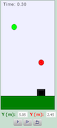

Problem 2.18: A Tennis Ball Launcher Shoots a Red Tennis Ball into the Air

Two balls are shown. The red ball is launched from a tennis ball
launcher while the green ball is dropped without any initial velocity at some initial height.
Students are asked various questions regarding this situation.